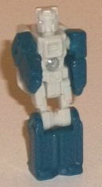
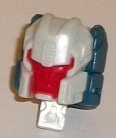
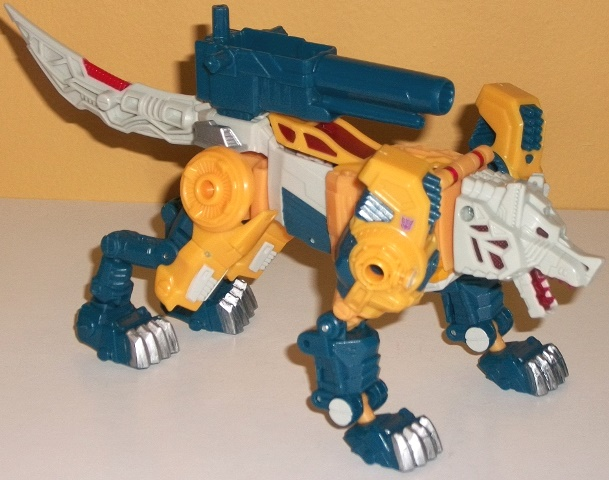
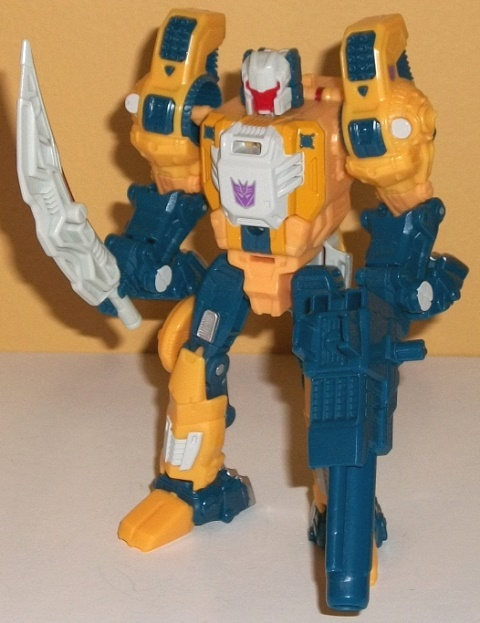

Allegiances
: Decepticon
Size
: Deluxe
Difficulty of Transformation
: Medium
Color Scheme
: Dull yellow, dark
greenish blue, dull off-white, and some silver, transparent dark cherry
red, and moderately dark red
Rating
: 9.4


Monxo is the new copyright-friendly
name for Monzo, G1 Weirdwolf's Titan Master. (Yes, Weirdwolf is now Wolfwire,
because of copyright reasons? I dunno, hard to believe a name like Weirdwolf
is taken.) Anyways, Monxo in robot mode actually is a bit of a departure
from his G1 version in terms of mold details. There are some details that
are the same/similar to the G1 toy, such as the basic "hands molded onto
the inside of the arms", the diagonal "belt-like" detail on the waist,
and the rectangular details on the upper legs. However, the chest looks
different with one large visible square with no two large side details,
very plain minimal detailing on the lower legs, and a head that's VERY
different from the G1 version. The head is very square compared to the
more curved design of Monzo and more of a "helmet" look over both the top
and the sides of the head, with the face itself smaller inside said helmet.
The colors are a dull off-white and a dark greenish blue on the lower legs
and arms-- the two colors go okay with each other, I suppose, but they're
kinda boring. Monxo really needed some paint in this mode, particularly
some red (like on his face on the G1 toy). As with all Titan Masters, Monxo
can move in this mode at the head, shoulders, and back-and-forth at the
hips and knees (with both legs as one piece, since they're connected at
the knees). In head mode, again he deviates from the G1 toy, with the facesculpt
being more curvy compared to the very square G1 Weirdwolf head. To me this
is a positive change, but what is ESPECIALLY awesome is the wicked-looking
angular visor that almost looks like it becomes long curved evil-looking
eyebrows on each end, which is painted red along with the face that really
helps to make it all contrast against the off-white "helmet". It's one
of my favorite headsculpts from the Titans Returns line. Other than these
changes, the major G1 head details-- like the forehead vent and little
vents on the side of the cheeks-- are here. The dark greenish blue parts
on the back just BARELY stick out from the top of the headsculpt when looked
at from a frontal view, so they're minor extras at best and easily overlooked.


Wolfwire's beast mode
is... well, a wolf. Obviously. The proportions in this mode are generally
quite solid-- there's no large undercarriage, no over-sized body, no proportional
issues that can often plague some beast TFs. It's an excellent update of
G1 Weirdwolf's wolf mode, but with more "modern" proportions and a slightly
stylized look-- the only proportional issues compared to a real wolf that
are significantly off are that the shoulders and feet are definitely oversized,
but I think this is a stylistic choice, and I actually quite like it, so
I don't remotely mind. Weirdwolf's G1 color scheme of orangish yellow,
off-white, and dark greenish blue are the primary colors. It's not exactly
my favorite scheme-- if you've been reading my reviews for a while, you
know I'm not a big fan of yellow normally-- but the colors do contrast
against each other fairly well, though the off-white could stand to be
a bit more "pure" for even better contrast, if you ask me. There's also
some silver paint apps here and there among the claws and rear, and they
contrast quite well against the blue; not so much against the other colors.
What I really like are the transparent dark cherry red plastic used for
the wolf eyes and teeth (they make his teeth look bloody... that's kinda
dark for a TF toy, man). It's also used on the windows for the cockpit,
which is in the center of Wolfwire's back. Basically you lift up the top
from the back, rotating it forward, and you can store Monxo in there in
this mode. Unfortunately, the transparent cherry red plastic can crack
when rotating it up and down simply from normal use-- it's not a universal
problem (mine fortunately does not have this issue), but it is kinda common,
so be careful. (This is also required for the transformation, not just
if you want to put Monxo in the body, so that's another issue with this.)
There's also a bit of red on the nice-looking sharp tail, which contrasts
well against the off-white. Wolfwire also has very impressive mold detailing,
with mechanical detailing on nearly every square inch of the toy-- vents,
wiring, missile launchers on the shoulders, and lots of angular bits, particularly
on the head. The segmented lines on the ears and "whiskers" on the head
are particularly well-done. Wolfwire's large blue cannon can slot on top
of his rump in this mode, with a hole in the top of the cannon for Monxo
or another Titan Master to sit inside. As far as articulation in this mode,
Wolfwire can move at the jaw, slightly at the neck, at the shoulders, two
points on the front knees, two points on the front paws, at the hips, four
points at the rear knees, and at two points at the rear ankles. Thus, Wolfwire
has an impressive amount of articulation in his beast mode.
Wolfwire's transformation
to robot mode, as far as the major strokes, is pretty straightforward.
Stand him up, rear legs become the robot legs, front legs become the robot
arms, torso collapses into itself a bit and is still the robot torso. However,
there's several "small" little steps, like flipping out the hands as you
fold back the front paws, sliding down the yellow "armor" bit on the legs
to the bottom, and a few other minor things. The end result looks pretty
good overall in terms of proportions and general feel, though I don't feel
he looks different enough when compared to the beast mode because of the
aforementioned transformation. I do like the rather thick arms and torso,
it really makes Wolfwire seem more powerful. There are a few kibble issues,
but none of them outright ruin the mode; there's the wolf paws behind the
lower arms and feet, as well as the wolf head and some minor cockpit bits
behind the main body. The wolf head is the only thing that really sticks
out from any view, though (and even then only from a side view), and it
doesn't get in the way of articulation, so it's only a minor downside.
I do like the engine-like mold details on the chest, though otherwise most
of the details from the wolf mode carry over to this mode, so there's not
much to really discuss in terms of added paint apps/color scheme here.
For articulation in this mode, Wolfwire can move at the neck, shoulders,
elbows (at two points), waist rotation (though you need to be careful with
the cockpit bits hanging down a little behind the waist), movement at the
hips, knees (at two points), ankles, and slightly up-and-down at each toe.
So Wolfwire is quite poseable and balanced in this mode, as well. Wolfwire's
beast tail obviously becomes a sword-- it's not very original, but still
looks cool. Wolfwire can also hold his large blue gun of course, but he
has to hold it upside down when compared to beast mode (due to where the
handle is), so unfortunately you can't sit a Titan Master in it in this
mode.
Wolfwire may not have
the most original transformation and there's a lot shared in between his
two modes, but otherwise he is a DARNED good Titans Return toy. Just remarkably
solid in both modes, minimal (if any) kibble depending upon what mode you're
in, excellent proportions, stellar articulation in both modes. The color
scheme serves its purpose, though it's not necessarily anything to write
home about. He also has cool weapons, and is a nice update to the G1 toy
in terms of aesthetic and the beast and robot faces. Really, if it wasn't
for the somewhat common issue with the cracking cockpit hinge, this would
be an unqualified recommendation. As it is, I'd still highly recommend
him, just keep that receipt handy until you've transformed him a few times
in case you get a defective one.
Review by Beastbot